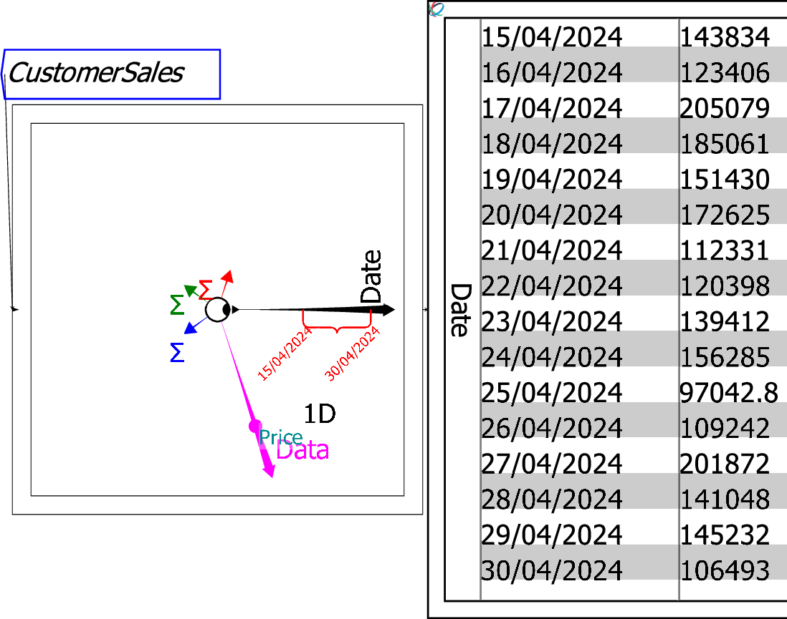

A caliper is a range selector for an axis. Its customary use will be to select a range of dates, but a caliper can be applied to any axis to select a subset of data which is contiguous. In the next figure, calipers have been applied to extract the last 15 days' of data from this Ravel.

When a caliper is initially created, it spans the entire range of a given dimension. It is applied to sections of that data by moving the vertical left or right side of the parenthesis; the entire parenthesis is moved by clicking and dragging on the peak of the parenthesis—the length of the selection is thus maintained while the segment selected is altered.
Ravel currently allows one caliper per axis. Future releases will enable multiple calipers, which will allow non-contiguous segments of data to be displayed on the one plot or sheet.